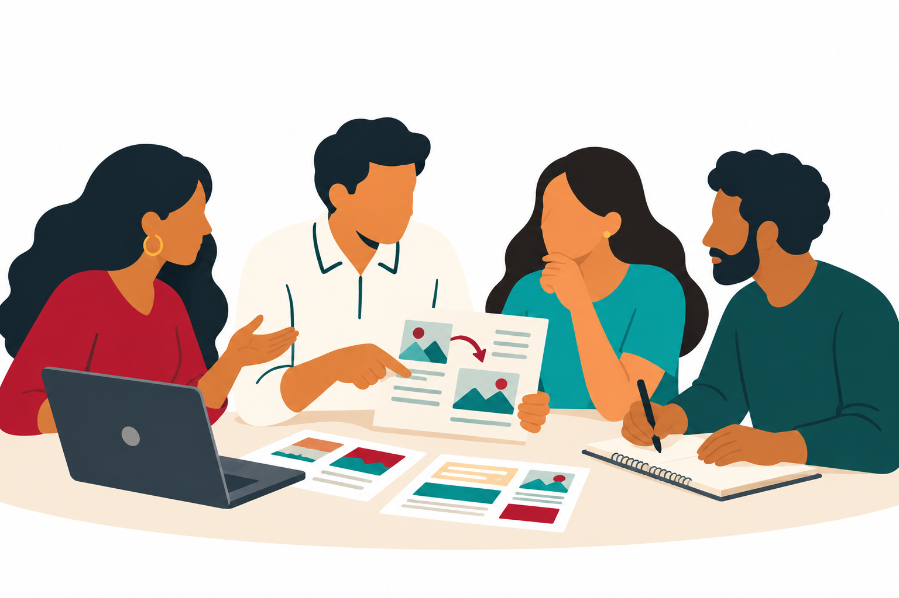
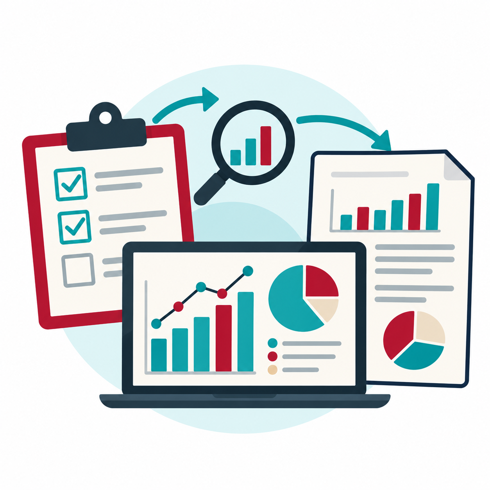
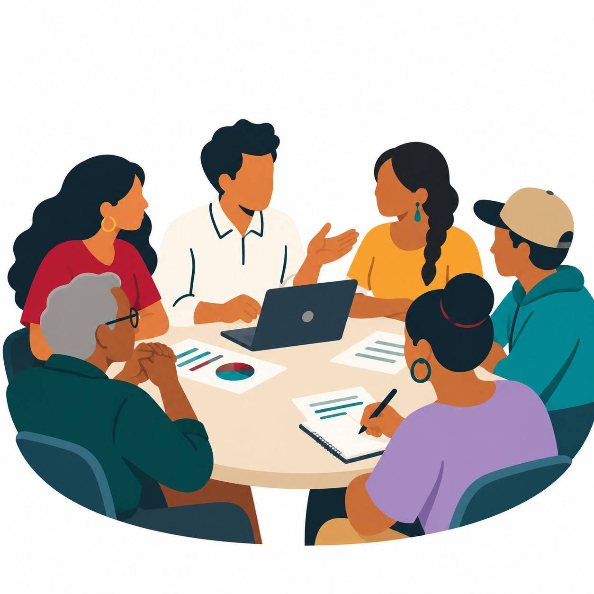
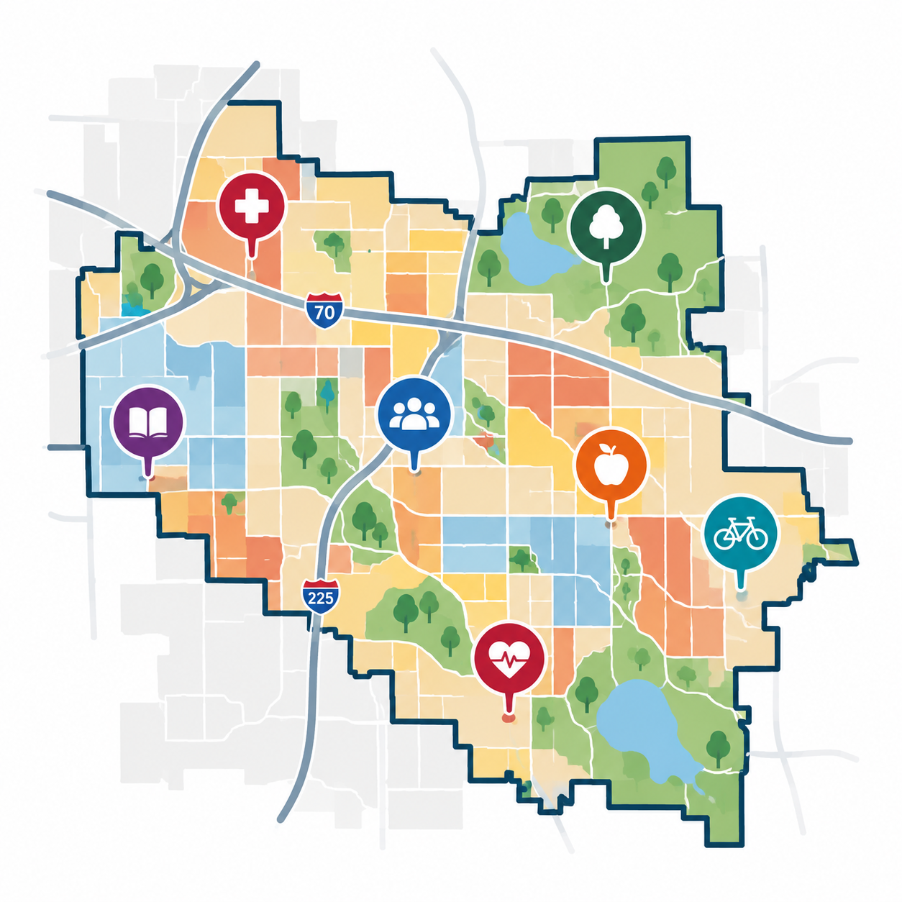

Our Services
How We Can Help
At Coalición Latina, we collaborate with organizations, institutions, and community partners to develop culturally responsive solutions that address the needs of Latino communities.
Our services combine public health expertise, research methods, and community-centered approaches to strengthen programs, inform decision-making, and support meaningful change.
Consulting
We provide public health consulting services to support organizations in developing effective, culturally responsive programs and initiatives.
Our consulting services may include program planning, research strategy, community engagement, and guidance on evidence-informed public health practices.
Transcreation
Effective communication goes beyond translating words. It requires understanding culture, context, and community experiences.
Our transcreation services focus on adapting health education materials, outreach messages, and informational resources to make them linguistically appropriate, culturally relevant, and meaningful to Latino audiences.

Program Evaluation
Understanding program effectiveness is essential to strengthening public health initiatives and maximizing community impact.
We support organizations through evaluation planning, data collection, survey development, outcome measurement, and analysis.
Our goal is to generate actionable findings that inform decision-making, demonstrate program outcomes, and support continuous improvement.

Community Advisory Boards
Meaningful community engagement requires more than gathering feedback. It requires creating opportunities for community members to influence decisions that affect them.
We help organizations plan, establish, and facilitate Community Advisory Boards that elevate community perspectives and strengthen relationships between institutions and residents.
Our approach emphasizes trust, inclusive participation, and shared decision-making.

Community Needs Assessments
Understanding community strengths, challenges, and priorities is fundamental to designing programs that respond to local needs.
We support organizations in conducting community needs assessments using surveys, interviews, focus groups, community engagement, and quantitative and qualitative data analysis.
Our assessments seek to inform strategic planning, resource allocation, and the development of equitable public health initiatives.

Partner With Us
Are you looking to strengthen your organization's connection with Latino communities?
We welcome opportunities to collaborate with nonprofits, universities, healthcare organizations, government agencies, and community partners committed to improving health and well-being.
Whether you're developing a new program, evaluating an existing initiative, or seeking meaningful community engagement, we would love to explore how we can work together.
Connect With Us